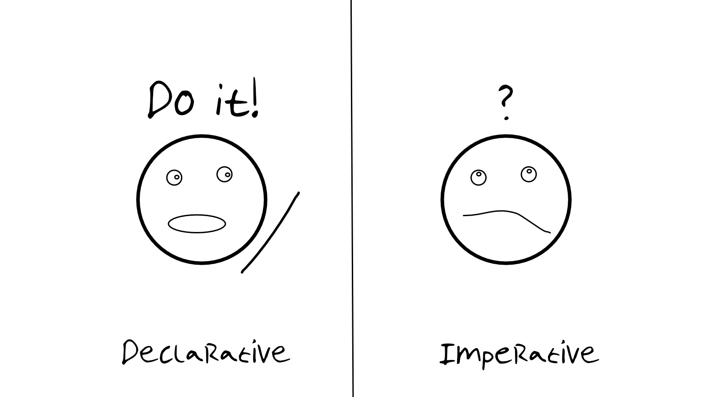
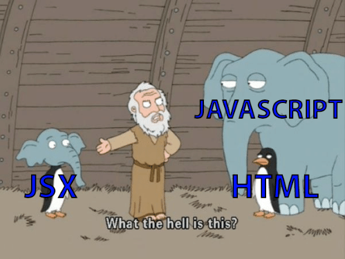

React is a declarative JavaScript library for building user interfaces, especially single-page applications (SPA).
It is open source and was created at Facebook (Meta) in 2013.

Declarative: Tell me what you want to do
Imperative: Tell me how to do it
A single-page application loads one web document, then updates its content with JavaScript instead of asking the server for a new page.
No refresh required for navigation!
Components are the building blocks of any React app.
Components let you split the UI into independent, reusable pieces, and think about each piece in isolation.
There are two kinds of component
function Button() {
return <button>Click me!</button>;
}
<button>
class Button extends React.Component {
render() {
return <button>Click me!</button>;
}
}
extends React.Component —
without it this is just a class with a method called render
A component is a function that returns markup?
Because the markup can contain values
function Button() {
const text = "Click me!!!";
return <button>{text}</button>;
}
And it can branch
function Button({ isLoading }) {
if (isLoading) {
return <button disabled>Loading…</button>;
}
return <button>Now you can click me</button>;
}

We can write JavaScript inside JSX inside { }
function Greeting() {
const text = "Click me!!!";
return <button>{text}</button>;
}
function Year() {
{/* the current year, recomputed on every render */}
return <p>We're in {new Date().getFullYear()}</p>;
}
Date — it would
shadow the built-in you are trying to call
A component returns one node.
// ❌ adjacent JSX elements must be wrapped
return (
<p>Counter</p>
<button>Increment</button>
);
// ✅ a fragment groups them without adding a DOM node
return (
<>
<p>Counter</p>
<button>Increment</button>
</>
);
Composing components
function HomePage() {
return (
<Page>
<Header>
<Navigation />
</Header>
<Main>
<div>
<Profile />
<Articles />
<Videos />
</div>
</Main>
</Page>
);
}
We can render conditionally
function NotificationButton({ hasNewNotification }) {
return (
<>
<Button />
{hasNewNotification && <NotificationBadge />}
</>
);
}
&& renders the right side only
when the left is true
Is this component reusable?
function Button() {
return <button>Click me!!!</button>;
}
What if we want a button with 'submit' text?
function ClickMeButton() {
return <button>Click me!!!</button>;
}
function SubmitButton() {
return <button>Submit</button>;
}
One component per label does not scale.
How can we make this component reusable?
Props are arguments passed into React components.
Pass props down to components
<Form>
<Button text="Sign up" />
<Button text="Login" />
</Form>
Read the prop inside the component
function Button(props) {
return <button>{props.text}</button>;
}
Components can have many props
function Coffee({ name, img, description, price }) {
return (
<article>
<img src={img} alt={name} />
<h4>{name}</h4>
<h5>{price}</h5>
<p>{description}</p>
</article>
);
}
props. everywhere
<img />
must close itself
React components can have internal state
State is like a component's memory
When the state changes, React re-renders the component and updates the screen
Let's implement a counter and see state in action
function Counter() {
let counterValue = 0;
const handleIncrementClick = () => {
counterValue++;
};
return (
<>
<p>Counter value is: {counterValue}</p>
<button onClick={handleIncrementClick}>Increment</button>
</>
);
}
onClick, not
onclick — JSX event props are camelCase, and
the lowercase spelling silently does nothing
counterValue is a local variable. The next render starts
the function again and resets it to 0
We can declare state with the useState hook
const [value, setValue] = useState(initialValue);
// value — the current state, for this render
// setValue — asks React for a new render with a new value
// name them whatever you like; [x, setX] is the convention
// call useState once per independent piece of state
import { useState } from "react";
function Counter() {
const [value, setValue] = useState(0);
const handleIncrementClick = () => {
setValue(value + 1);
};
return (
<>
<p>Counter value is: {value}</p>
<button onClick={handleIncrementClick}>Increment</button>
</>
);
}
value++ would not work:
never assign to state directly, always go
through the setter
// ❌ both calls read the same `value`, so this adds 1, not 2
setValue(value + 1);
setValue(value + 1);
// ✅ the updater form sees the latest value
setValue((v) => v + 1);
setValue((v) => v + 1);
value is a snapshot of this
render. It does not change until the next one
class — class is a reserved
word in JavaScript
style prop takes an object,
with camelCased properties and units included
<button className="primary large">Save</button>;
<button style={{ backgroundColor: "#ff9100", paddingInline: "1rem" }}>
Save
</button>;
import "./Button.css", global like any CSS
Button.module.css — class names are made unique at build
time, so they cannot collide
import styles from "./Button.module.css";
function Button({ text }) {
return <button className={styles.primary}>{text}</button>;
}
function Button({ text, isPrimary }) {
return (
<button className={isPrimary ? "primary" : "secondary"}>{text}</button>
);
}
It is just a string, so any expression that makes one will do.
useEffect runs code
after the render is on screen
import { useEffect, useState } from "react";
function Person({ id }) {
const [person, setPerson] = useState(null);
const [error, setError] = useState(null);
const [isLoading, setIsLoading] = useState(true);
useEffect(() => {
const controller = new AbortController();
setIsLoading(true);
fetch(`https://swapi.dev/api/people/${id}/`, {
signal: controller.signal,
})
.then((response) => {
if (!response.ok) {
throw new Error(`unexpected status: ${response.status}`);
}
return response.json();
})
.then(setPerson)
.catch((err) => {
if (err.name !== "AbortError") setError(err);
})
.finally(() => setIsLoading(false));
return () => controller.abort();
}, [id]);
if (isLoading) return <p>Loading…</p>;
if (error) return <p>Could not load this person.</p>;
return <h4>{person.name}</h4>;
}
[id] —
the effect re-runs when id changes. Leave it out and it
runs after every render
id can arrive
last and overwrite the new one
Real applications hand this to a library — TanStack Query, or the data loaders in Next.js and React Router — which add caching, retries and deduplication on top of exactly this.
Write it by hand once, so you know what they are doing for you.